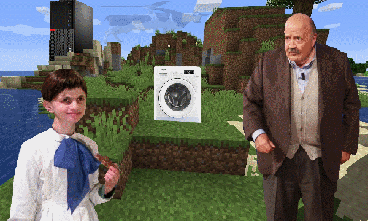
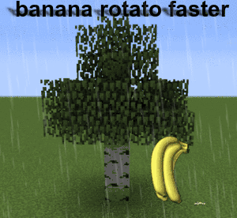

Gli uomini iniziarono ad ambientarsi ed a costruire i primi rifugi, ma per la Mucca tutto questo era fin troppo facile, quindi boh, cancello' tutti gli uomini tranne un fortunato individuo, Angerbie.
Angerbie, disorientato, urlo': <AAAUHHAAA ASDAJKSDKJASHDKJAIOWKAL!!!>
Si', a quanto pare la Mucca non creo' ancora una lingua.
Tuttavia la Mucca si affretto' a crearne una ed impiantarla nel cervello di Angerbie,questa lingua era l'Italiano, perche' si'.
La Mucca si mostro' nel cielo e disse: <Angerbie! Io sono la tua Dea! Io ti ho creato! Tu sei il primo uomo nell'universo, io affido tutto questo a te!>
Ma Angerbie rispose: <Oh somma Dea Mucca, io ora giaccio qui da solo! Come posso sopravvivere e mandare avanti il progresso di questo pianeta?>
La Mucca allora disse: <OPPORCAPUT- Giustissimo! mi ero dimenticata di metterti una compagna per procreare e creare altre forme di vita! ..uhm, ecco a te!>
La Mucca pero', per creare questa donna, prese il coglione di Angerbie ed inizio' a formarla.
No davvero, nel vero senso della parola, staccò una palla ad Angerbie, Perche' si'.
Angerbie ora, con una palla in meno, assistette alla formazione di Embolgerisia, una donna stupenda ma anche estremamente stupida.
La Mucca prima di andarsene disse testuali parole: <Ciao raga, e' stato un piacere ma ora devo andare a catturare farfalle su Animal Crossing, voi boh fate cose, andate a pescare, fate delle case a forma di pene, mangiate il fango e bevete l'acqua putrida, fatevi venire l'AIDS, non me ne frega un cazzo. L'importante è che non mangiate quella banana che sta sull'albero alla vostra sinistra, sto cercando di far crescere la banana più grande di tutti i multiversi per la gara "Miglior Banana del Multiverso" dove noi Dii di diverse categorie, ci scontriamo per vedere chi di noi ha l'universo migliore. Quindi raga non fate cazzate per favore che ho perso tutte le volte negli ultimi triliardi di anni, stavolta vincere tocca a me.>
Angerbie e Embolgerisia risposero: <Oke>
La Mucca quindi li lascio' al loro destino.
